Erfahrungsberichte
Was meine Klienten sagen
Echte Geschichten von echter Transformation – aus Nachrichten, Karten und Rückmeldungen, die mich erreicht haben und mich jedes Mal berühren.
Ausgewählt
Stimmen, die für sich sprechen
„Mein Lebensgefühl hat sich verändert. Ich freue mich auf das Gute, was kommt, ich höre auf das, was ich wirklich will, und ich fühle mich stark und mutig. Danke liebe Silvia!“Klientin, per WhatsApp
„Ich kann schon nach relativ kurzer Zeit viele deiner Tipps anwenden und empfinde eine totale Verbesserung bei Sachen, die mir vorher ziemliche Probleme bereitet haben. Für mich bist du uneingeschränkt empfehlenswert.“Thomas, Klient
„Das Jahrescoaching mit dir hat mir in vielem die Augen geöffnet und mein Bewusstsein erweitert. Du bist ein toller Coach – und ein Coaching bei dir ist ein Geschenk.“Anuschka, Klientin
„Silvia ist eine sehr leuchtende, präsente Persönlichkeit als Coach. Sie benennt die Themen genau, exakt und schnell. Silvia als Coach für sein persönliches Wachstum zu buchen, ist eine sehr gute, geniale Entscheidung.“Kollegiales Feedback
„Du begleitest mich liebevoll, herzöffnend, respektvoll. Schon nach dieser kurzen Zeit spüre ich wunderbare Veränderungen an mir. Ich habe mehr Ruhe und Gelassenheit im Umgang mit meinen Kindern.“Klientin, nach 1 Monat Coaching
„Es war der absolute Hammer, wie du das gemacht hast – an den wundervollen Tagen im Tessin. Ich wünsche dir von Herzen, dass du noch viele, viele andere erreichst wie uns.“Stefanie, Retreat-Teilnehmerin
Ungefiltert
Original-Nachrichten
So wie sie bei mir ankommen – ehrlich, spontan, von Herzen.
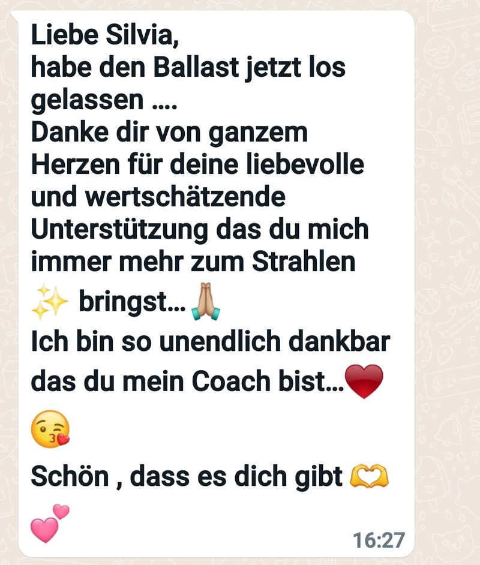
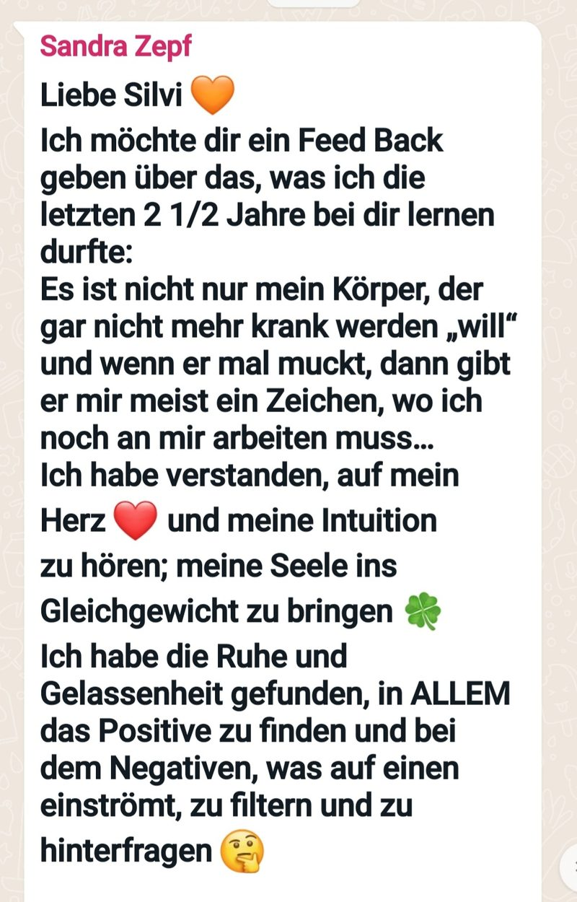
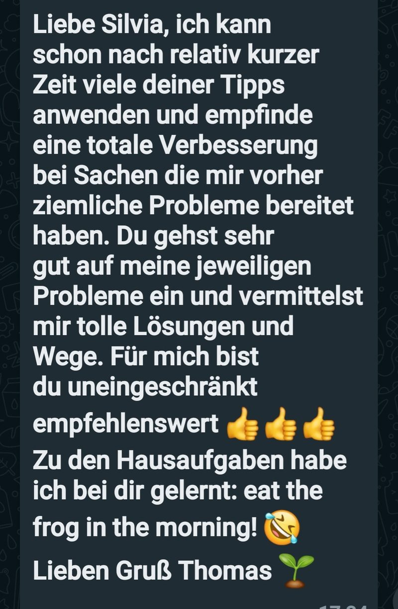
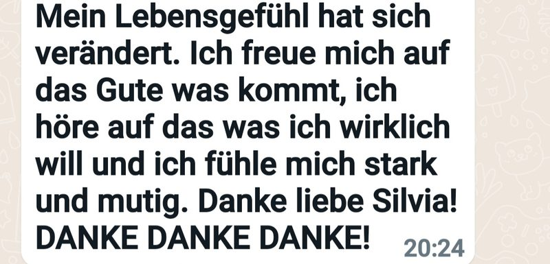
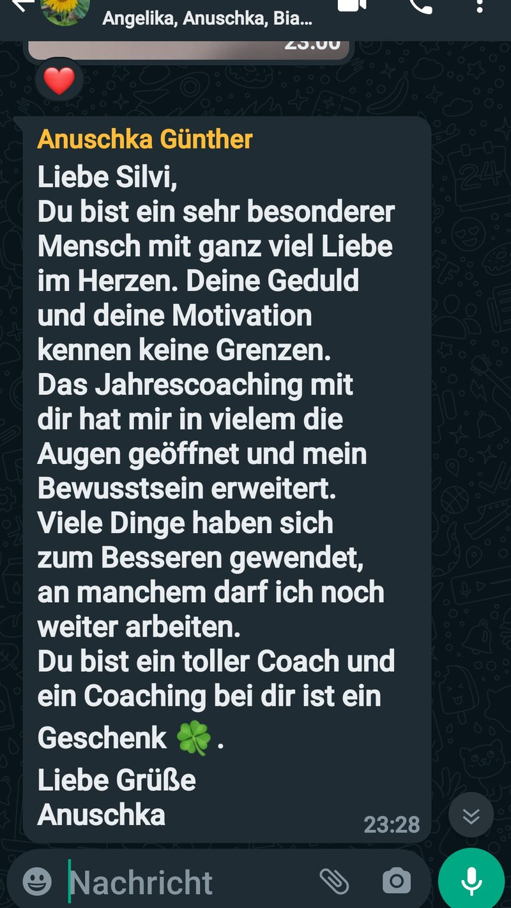
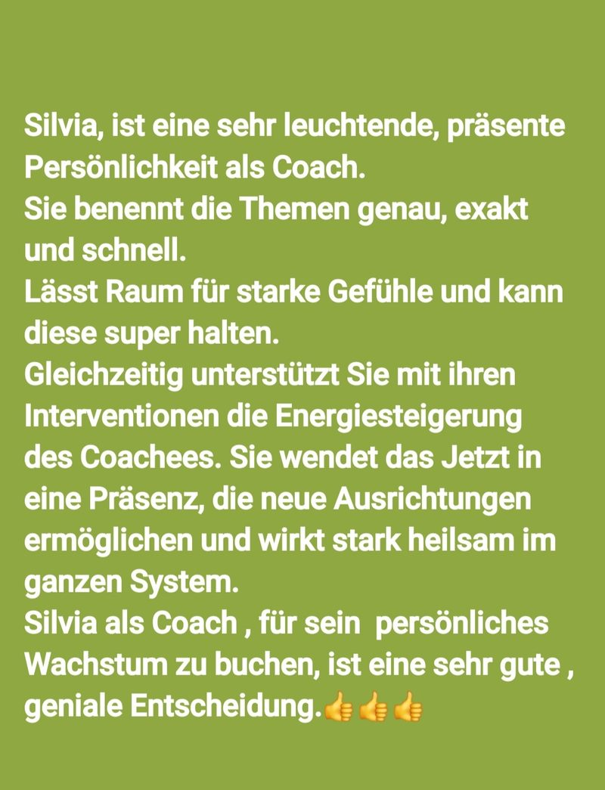
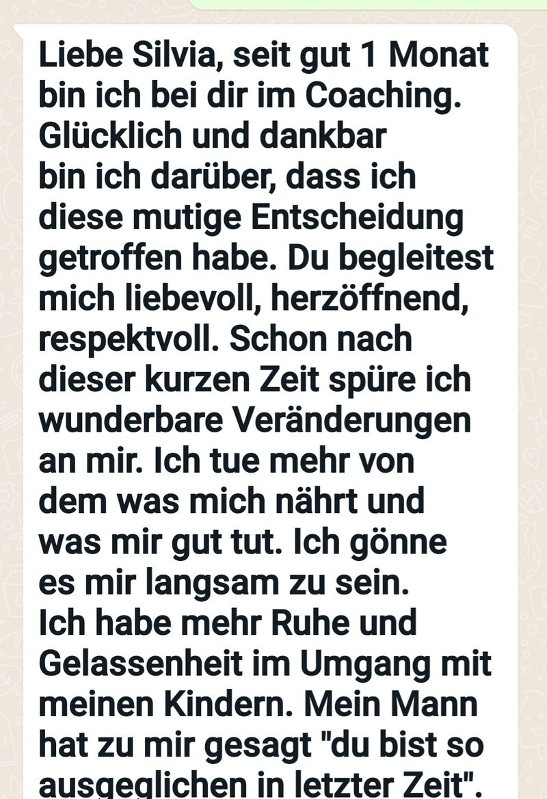
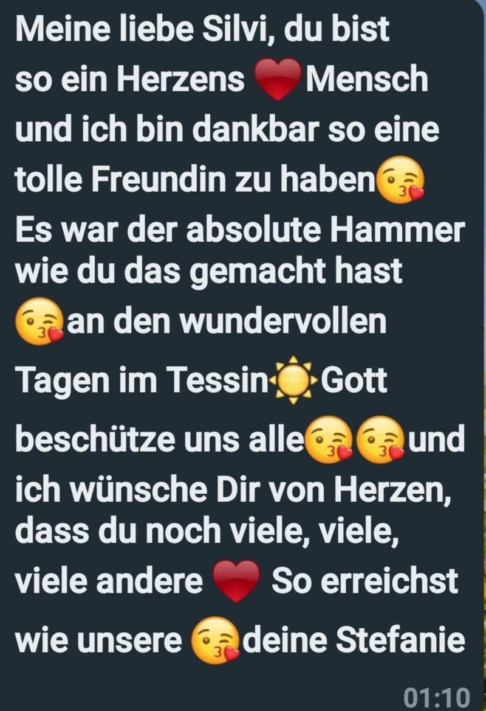
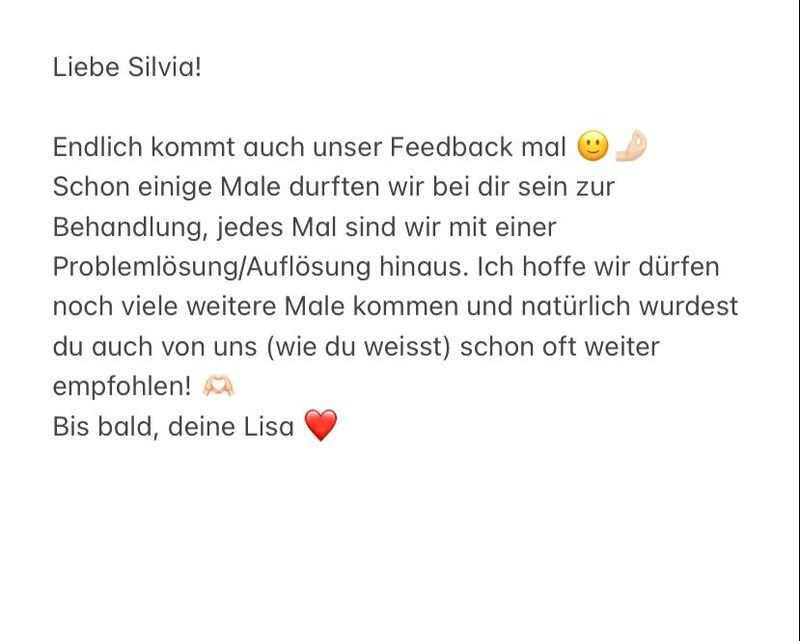
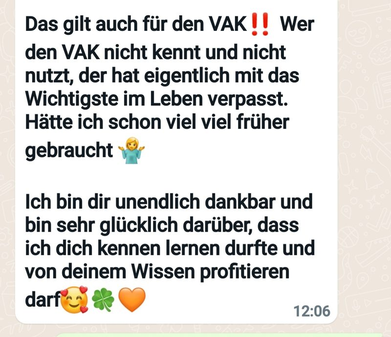
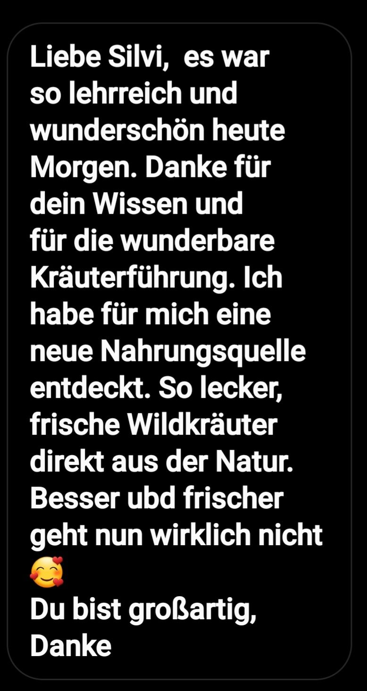
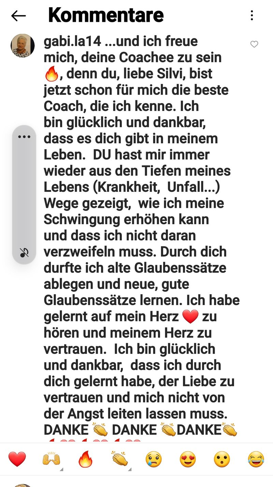
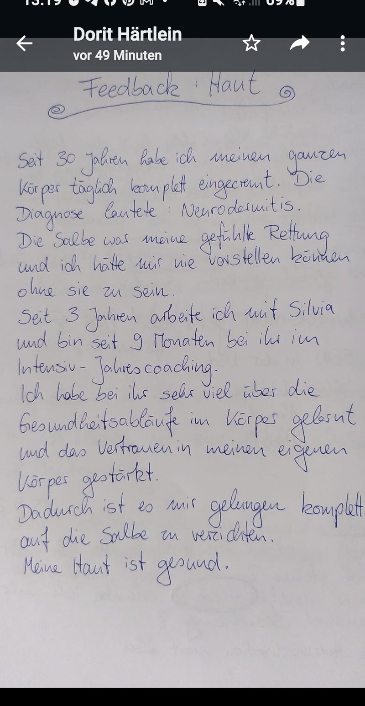
Herzensmomente
Was bleibt
Manche Rückmeldungen kommen nicht als Nachricht, sondern als Karte, als Flipchart – oder als gemeinsames Lachen am See.
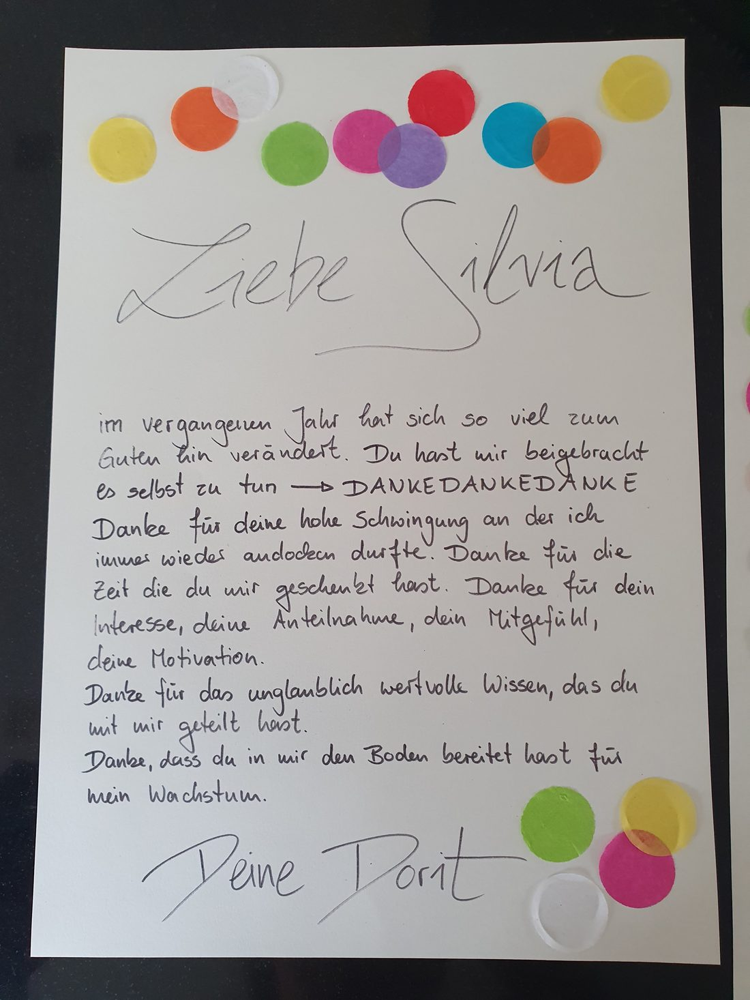
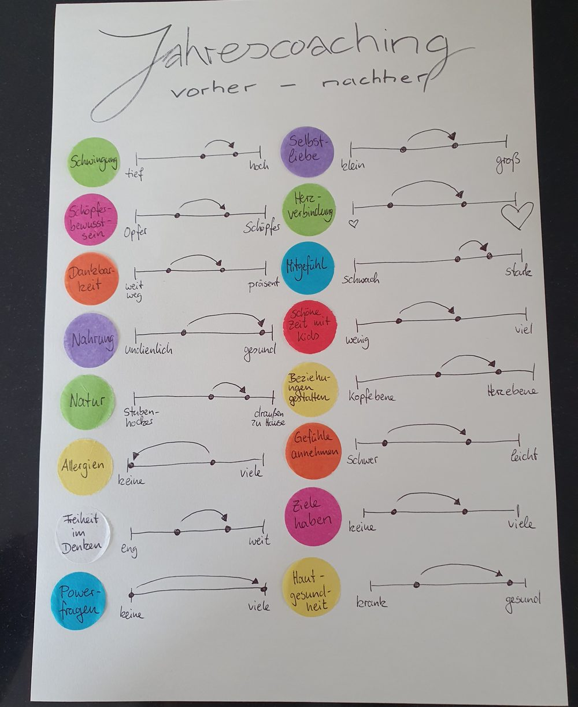
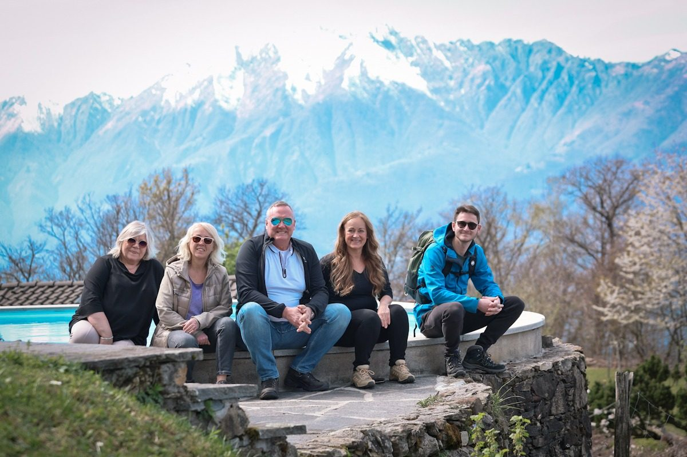
Vielleicht bist du die nächste Stimme.
Deine Geschichte beginnt mit einem Gespräch
In einem kostenfreien Kennenlerngespräch erzählst du mir, was dich bewegt – und wir schauen gemeinsam, was für dich passt.
Termine montags · Keine Verpflichtung · Vertraulich